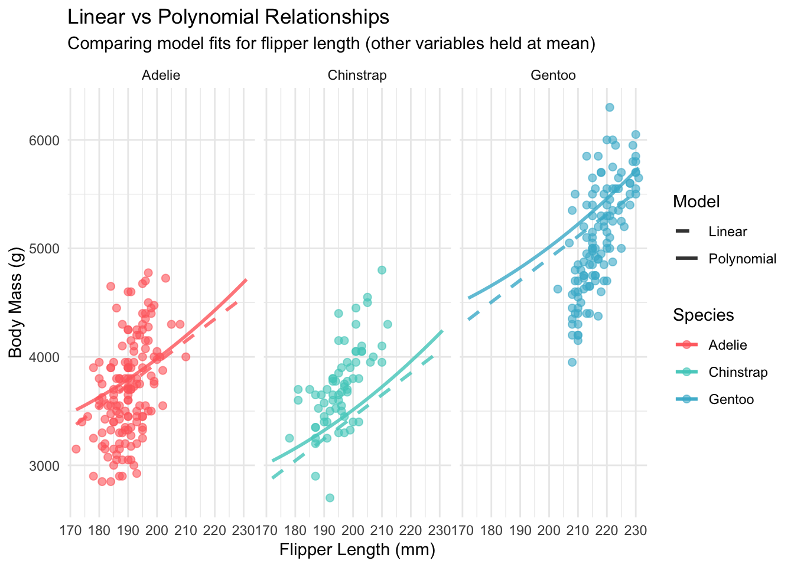

Welcome to the third installment of our Palmer penguins adventure! In Part 2, we achieved remarkable results, boosting our R² from 76% to 86% by incorporating species information. But as any responsible data scientist knows, impressive performance on training data is only the beginning of the story.
The critical question remains: How well will our models perform on new, unseen penguin data? This is where rigorous validation techniques become essential. Today, we’ll put our models through their paces using cross-validation, explore whether non-linear relationships can improve our predictions, and introduce our first machine learning competitor.
In this post, we’ll explore:
Cross-validation techniques for robust model evaluation
Polynomial features to capture non-linear relationships
Random forest models as a machine learning baseline
Systematic model comparison with proper uncertainty quantification
The bias-variance tradeoff in action
By the end of this post, you’ll have confidence in your model’s generalizability and understand when additional complexity helps versus hurts predictive performance.
2 Setup and Model Recap
Let’s reload our work and establish our baseline models:
library(palmerpenguins)library(tidyverse)library(broom)# Conditional loading of car packageif (requireNamespace("car", quietly =TRUE)) {library(car)} else {cat("⚠️ Package 'car' not available. Install with: install.packages('car')\n")}library(randomForest)library(caret)library(knitr)library(patchwork)# Set theme and colorstheme_set(theme_minimal(base_size =12))penguin_colors <-c("Adelie"="#FF6B6B", "Chinstrap"="#4ECDC4", "Gentoo"="#45B7D1")# Load clean datadata(penguins)penguins_clean <- penguins %>%drop_na()# Recreate our key models from previous partssimple_model <-lm(body_mass_g ~ flipper_length_mm, data = penguins_clean)multiple_model <-lm(body_mass_g ~ bill_length_mm + bill_depth_mm + flipper_length_mm, data = penguins_clean)species_model <-lm(body_mass_g ~ bill_length_mm + bill_depth_mm + flipper_length_mm + species, data = penguins_clean)cat("📋 Baseline Model Performance (Training Data):\n")
Polynomial model - RMSE: 310.8 (±44.4), R²: 0.855 (±0.046)
4.2 Visualizing Non-linear Relationships
# Create predictions for visualizationflipper_range <-seq(min(penguins_clean$flipper_length_mm), max(penguins_clean$flipper_length_mm), length.out =100)# Compare linear vs polynomial relationships for each speciesprediction_data <-expand_grid(flipper_length_mm = flipper_range,species =unique(penguins_clean$species)) %>%mutate(bill_length_mm =mean(penguins_clean$bill_length_mm),bill_depth_mm =mean(penguins_clean$bill_depth_mm),body_mass_g =0# placeholder )# Get predictions from both modelsprediction_data$linear_pred <-predict(species_model, newdata = prediction_data)prediction_data$poly_pred <-predict(poly_model, newdata = prediction_data)# Visualizationggplot(penguins_clean, aes(x = flipper_length_mm, y = body_mass_g, color = species)) +geom_point(alpha =0.6, size =2) +geom_line(data = prediction_data, aes(y = linear_pred, linetype ="Linear"), size =1, alpha =0.8) +geom_line(data = prediction_data, aes(y = poly_pred, linetype ="Polynomial"), size =1, alpha =0.8) +scale_color_manual(values = penguin_colors) +scale_linetype_manual(values =c("Linear"="dashed", "Polynomial"="solid")) +labs(title ="Linear vs Polynomial Relationships",subtitle ="Comparing model fits for flipper length (other variables held at mean)",x ="Flipper Length (mm)", y ="Body Mass (g)",color ="Species", linetype ="Model") +facet_wrap(~species) +theme_minimal()

Comparison of linear versus polynomial model fits across species
5 Random Forest Models
Now let’s introduce our first machine learning approach - random forests:
5.1 Basic Random Forest
set.seed(123)# Train random forest using caret for consistencycv_rf <-train( body_mass_g ~ bill_length_mm + bill_depth_mm + flipper_length_mm + species + sex + island,data = penguins_clean,method ="rf",trControl = train_control,ntree =500,importance =TRUE)print(cv_rf)
Random Forest
333 samples
6 predictor
No pre-processing
Resampling: Cross-Validated (10 fold)
Summary of sample sizes: 299, 300, 300, 300, 299, 300, ...
Resampling results across tuning parameters:
mtry RMSE Rsquared MAE
2 296.1693 0.8709290 235.7196
5 300.8044 0.8666035 239.2056
8 304.0154 0.8638966 242.7076
RMSE was used to select the optimal model using the smallest value.
The final value used for the model was mtry = 2.
cat("• Linear models with species information perform excellently\n")
• Linear models with species information perform excellently
cat("• Polynomial features provide minimal improvement over linear relationships\n")
• Polynomial features provide minimal improvement over linear relationships
cat("• Random forests offer competitive but not superior performance\n")
• Random forests offer competitive but not superior performance
cat("• Cross-validation confirms our models generalize well to new data\n")
• Cross-validation confirms our models generalize well to new data
cat("• The bias-variance tradeoff favors simpler models in this dataset\n")
• The bias-variance tradeoff favors simpler models in this dataset
8.2 Model Selection Recommendations
cat("\n💡 Model Selection Guidance:\n")
💡 Model Selection Guidance:
cat("============================\n")
============================
# Calculate confidence intervals for performance differencesspecies_vs_poly_diff <-mean(cv_species$resample$RMSE - cv_poly$resample$RMSE)species_vs_rf_diff <-mean(cv_species$resample$RMSE - cv_rf$resample$RMSE)cat(sprintf("Species model vs Polynomial: %.1f grams RMSE difference\n", species_vs_poly_diff))
Species model vs Polynomial: 4.9 grams RMSE difference
cat(sprintf("Species model vs Random Forest: %.1f grams RMSE difference\n", species_vs_rf_diff))
Species model vs Random Forest: 19.5 grams RMSE difference
cat("\n🎯 Recommendation: The linear species model offers the best balance of:\n")
🎯 Recommendation: The linear species model offers the best balance of:
cat(" • Excellent predictive performance\n")
• Excellent predictive performance
cat(" • Model interpretability\n")
• Model interpretability
cat(" • Computational efficiency\n")
• Computational efficiency
cat(" • Biological meaningfulness\n")
• Biological meaningfulness
9 Looking Ahead to Part 4
We’ve established that our species-aware linear model performs excellently under cross-validation, but important questions remain about model assumptions and diagnostic procedures:
Are our regression assumptions satisfied?
How should we interpret residual patterns?
What do diagnostic plots tell us about model adequacy?
How robust are our results to outliers?
🎯 Preview of Part 4
In our next installment, we’ll dive deep into model diagnostics, residual analysis, and assumption checking. We’ll also explore influence diagnostics and learn how to identify and handle problematic observations that might affect our conclusions.
Have questions about cross-validation or model selection? Feel free to reach out on Twitter or LinkedIn. You can also find the complete code for this series on GitHub.
About the Author: [Your name] is a [your role] specializing in statistical ecology and machine learning. This series demonstrates best practices for model validation and selection in biological research.
@online{(ryy)_glenn_thomas2025,
author = {(Ryy) Glenn Thomas, Ronald and Name, Your},
title = {Palmer {Penguins} {Data} {Analysis} {Series} {(Part} 3):
{Advanced} {Models} and {Cross-Validation}},
date = {2025-01-03},
url = {https://focusonr.org/posts/palmer_penguins_part3/},
langid = {en}
}
For attribution, please cite this work as:
(Ryy) Glenn Thomas, Ronald, and Your Name. 2025. “Palmer Penguins
Data Analysis Series (Part 3): Advanced Models and
Cross-Validation.” January 3, 2025. https://focusonr.org/posts/palmer_penguins_part3/.